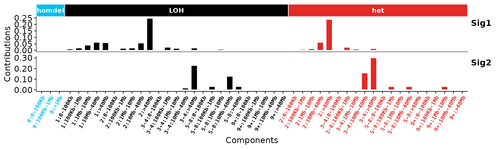
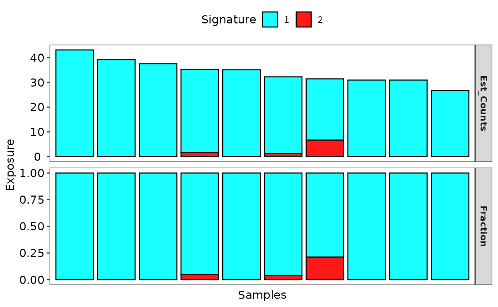
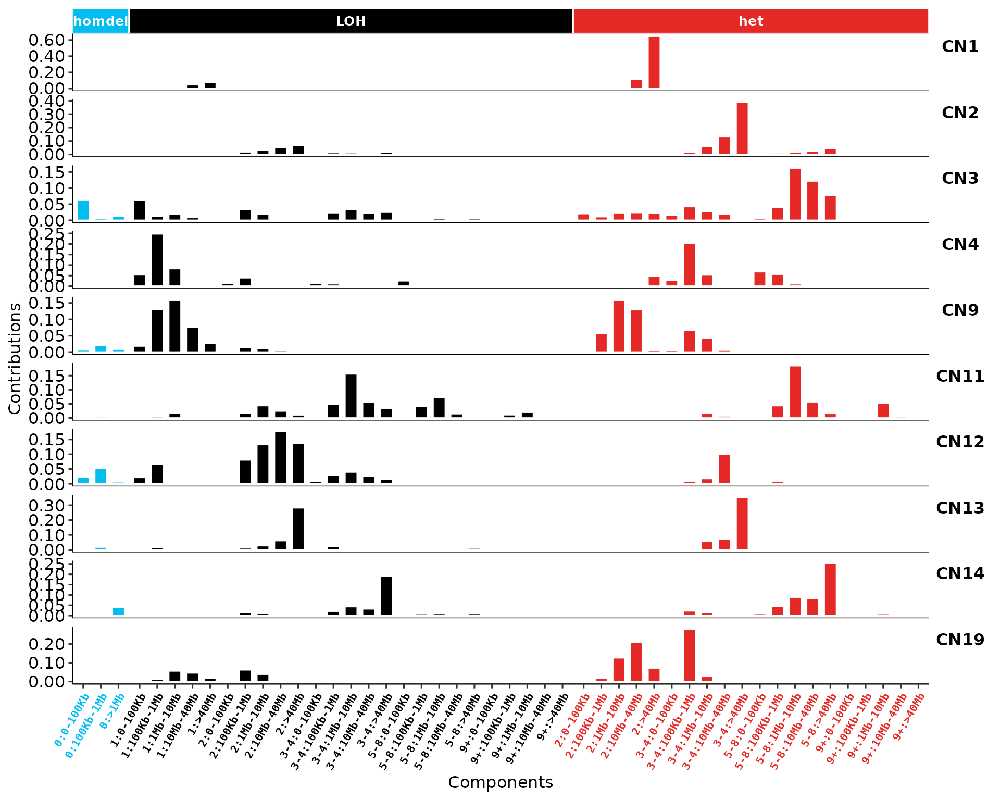
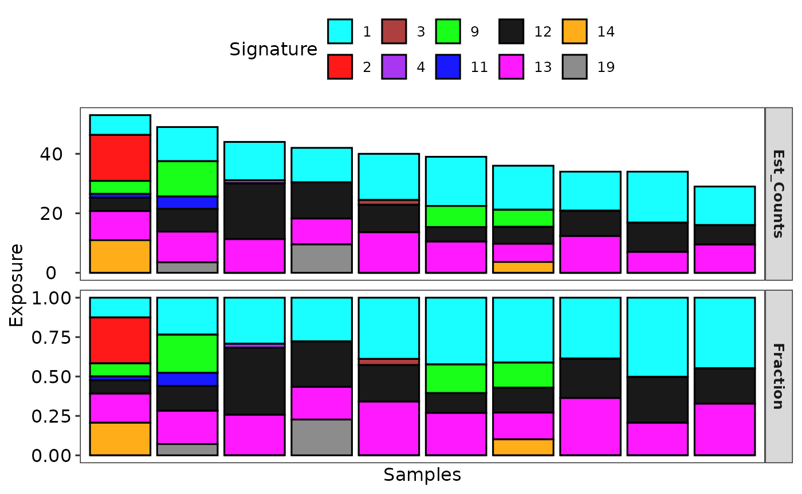

vignettes/cnsignature.Rmd
cnsignature.RmdExploring copy number signatures with recently developed approach have been described at The repertoire of copy number alteration signatures in human cancer.
A more general introduction please read Extract, Analyze and Visualize Mutational Signatures with Sigminer.
library(sigminer)
#> Registered S3 method overwritten by 'sigminer':
#> method from
#> print.bytes Rcpp
#> sigminer version 2.3.2
#> - Star me at https://github.com/ShixiangWang/sigminer
#> - Run hello() to see usage and citation.For this analysis, data with six columns are required.
load(system.file("extdata", "toy_segTab.RData",
package = "sigminer", mustWork = TRUE
))
set.seed(1234)
segTabs$minor_cn <- sample(c(0, 1), size = nrow(segTabs), replace = TRUE)
cn <- read_copynumber(segTabs,
seg_cols = c("chromosome", "start", "end", "segVal"),
genome_measure = "wg", complement = TRUE, add_loh = TRUE
)
#> ℹ [2025-11-30 14:32:07.628728]: Started.
#> ℹ [2025-11-30 14:32:07.639861]: Genome build : hg19.
#> ℹ [2025-11-30 14:32:07.641564]: Genome measure: wg.
#> ℹ [2025-11-30 14:32:07.643273]: When add_loh is TRUE, use_all is forced to TRUE.
#> Please drop columns you don't want to keep before reading.
#> ✔ [2025-11-30 14:32:07.654636]: Chromosome size database for build obtained.
#> ℹ [2025-11-30 14:32:07.656434]: Reading input.
#> ✔ [2025-11-30 14:32:07.658159]: A data frame as input detected.
#> ✔ [2025-11-30 14:32:07.660169]: Column names checked.
#> ✔ [2025-11-30 14:32:07.662274]: Column order set.
#> ✔ [2025-11-30 14:32:07.670262]: Chromosomes unified.
#> ✔ [2025-11-30 14:32:07.687523]: Value 2 (normal copy) filled to uncalled chromosomes.
#> ✔ [2025-11-30 14:32:07.692398]: Data imported.
#> ℹ [2025-11-30 14:32:07.694181]: Segments info:
#> ℹ [2025-11-30 14:32:07.695909]: Keep - 477
#> ℹ [2025-11-30 14:32:07.703314]: Drop - 0
#> ✔ [2025-11-30 14:32:07.705386]: Segments sorted.
#> ℹ [2025-11-30 14:32:07.707027]: Adding LOH labels...
#> ℹ [2025-11-30 14:32:07.709489]: Joining adjacent segments with same copy number value. Be patient...
#> ✔ [2025-11-30 14:32:07.882066]: 410 segments left after joining.
#> ✔ [2025-11-30 14:32:07.884385]: Segmental table cleaned.
#> ℹ [2025-11-30 14:32:07.886539]: Annotating.
#> ✔ [2025-11-30 14:32:07.902185]: Annotation done.
#> ℹ [2025-11-30 14:32:07.903946]: Summarizing per sample.
#> ✔ [2025-11-30 14:32:07.925171]: Summarized.
#> ℹ [2025-11-30 14:32:07.926917]: Generating CopyNumber object.
#> ✔ [2025-11-30 14:32:07.929168]: Generated.
#> ℹ [2025-11-30 14:32:07.93085]: Validating object.
#> ✔ [2025-11-30 14:32:07.932585]: Done.
#> ℹ [2025-11-30 14:32:07.934539]: 0.306 secs elapsed.
cn
#> An object of class CopyNumber
#> =============================
#> sample n_of_seg n_of_cnv n_of_amp n_of_del n_of_vchr
#> <char> <int> <int> <int> <int> <int>
#> 1: TCGA-DF-A2KN-01A-11D-A17U-01 34 6 5 1 4
#> 2: TCGA-19-2621-01B-01D-0911-01 34 8 5 3 5
#> 3: TCGA-B6-A0X5-01A-21D-A107-01 29 8 4 4 2
#> 4: TCGA-A8-A07S-01A-11D-A036-01 39 11 2 9 4
#> 5: TCGA-26-6174-01A-21D-1842-01 44 13 8 5 8
#> 6: TCGA-CV-7432-01A-11D-2128-01 41 16 7 9 9
#> 7: TCGA-06-0644-01A-02D-0310-01 47 19 5 14 8
#> 8: TCGA-A5-A0G2-01A-11D-A042-01 40 21 5 16 10
#> 9: TCGA-99-7458-01A-11D-2035-01 49 26 10 16 13
#> 10: TCGA-05-4417-01A-22D-1854-01 53 37 33 4 17
#> n_loh cna_burden
#> <int> <num>
#> 1: 15 0.000
#> 2: 20 0.095
#> 3: 18 0.083
#> 4: 21 0.106
#> 5: 24 0.113
#> 6: 24 0.188
#> 7: 33 0.158
#> 8: 23 0.375
#> 9: 33 0.304
#> 10: 29 0.617
cn@data
#> chromosome start end segVal sample
#> <char> <num> <num> <int> <char>
#> 1: chr1 3218923 116319008 2 TCGA-05-4417-01A-22D-1854-01
#> 2: chr1 116324707 120523902 1 TCGA-05-4417-01A-22D-1854-01
#> 3: chr1 149879545 247812431 4 TCGA-05-4417-01A-22D-1854-01
#> 4: chr10 423671 135224372 3 TCGA-05-4417-01A-22D-1854-01
#> 5: chr11 458784 19461653 3 TCGA-05-4417-01A-22D-1854-01
#> ---
#> 406: chr6 1016984 170898549 2 TCGA-DF-A2KN-01A-11D-A17U-01
#> 407: chr7 746917 158385118 2 TCGA-DF-A2KN-01A-11D-A17U-01
#> 408: chr8 617885 145225107 2 TCGA-DF-A2KN-01A-11D-A17U-01
#> 409: chr9 790234 140938075 2 TCGA-DF-A2KN-01A-11D-A17U-01
#> 410: chrX 1 155270560 2 TCGA-DF-A2KN-01A-11D-A17U-01
#> minor_cn loh .loh_frac
#> <num> <lgcl> <num>
#> 1: 1.0000000 FALSE NA
#> 2: 0.0000000 TRUE NA
#> 3: 0.5000000 TRUE 0.1175943
#> 4: 1.0000000 FALSE NA
#> 5: 1.0000000 FALSE NA
#> ---
#> 406: 0.3333333 TRUE 0.9979494
#> 407: 1.0000000 FALSE NA
#> 408: 1.0000000 FALSE NA
#> 409: 0.5000000 TRUE 0.8328715
#> 410: NA FALSE NAIf you want to try other type of copy number signatures, change the method argument.
tally_s <- sig_tally(cn, method = "S")
#> ℹ [2025-11-30 14:32:08.082316]: Started.
#> ℹ [2025-11-30 14:32:08.086812]: When you use method 'S', please make sure you have set 'join_adj_seg' to FALSE and 'add_loh' to TRUE in 'read_copynumber() in the previous step!
#> ✔ [2025-11-30 14:32:08.101282]: Matrix generated.
#> ℹ [2025-11-30 14:32:08.103231]: 0.021 secs elapsed.
str(tally_s$all_matrices, max.level = 1)
#> List of 2
#> $ CN_40: int [1:10, 1:40] 0 0 0 0 0 0 0 0 0 0 ...
#> ..- attr(*, "dimnames")=List of 2
#> $ CN_48: int [1:10, 1:48] 0 0 0 0 0 0 0 0 0 0 ...
#> ..- attr(*, "dimnames")=List of 2
sig_denovo = sig_auto_extract(tally_s$all_matrices$CN_48)
#> Select Run 3, which K = 2 as best solution.
head(sig_denovo$Signature)
#> Sig1 Sig2
#> 0:homdel:0-100Kb 0.000000 0.000000e+00
#> 0:homdel:100Kb-1Mb 0.000000 0.000000e+00
#> 0:homdel:>1Mb 0.000000 0.000000e+00
#> 1:LOH:0-100Kb 3.609460 3.819129e-242
#> 1:LOH:100Kb-1Mb 6.316554 2.814800e-127
#> 1:LOH:1Mb-10Mb 13.535473 2.784288e-190This directly calculates the contribution of 19 reference signatures.
act_refit = sig_fit(t(tally_s$all_matrices$CN_48), sig_index = "ALL", sig_db = "CNS_TCGA")
#> ℹ [2025-11-30 14:32:09.015874]: Started.
#> ✔ [2025-11-30 14:32:09.017781]: Signature index detected.
#> ℹ [2025-11-30 14:32:09.019398]: Checking signature database in package.
#> ℹ [2025-11-30 14:32:09.021903]: Checking signature index.
#> ℹ [2025-11-30 14:32:09.023569]: Valid index for db 'CNS_TCGA':
#> CN1 CN2 CN3 CN4 CN5 CN6 CN7 CN8 CN9 CN10 CN11 CN12 CN13 CN14 CN15 CN16 CN17 CN18 CN19
#> ✔ [2025-11-30 14:32:09.025265]: Database and index checked.
#> ✔ [2025-11-30 14:32:09.027086]: Signature normalized.
#> ℹ [2025-11-30 14:32:09.02867]: Checking row number for catalog matrix and signature matrix.
#> ✔ [2025-11-30 14:32:09.030265]: Checked.
#> ℹ [2025-11-30 14:32:09.031844]: Checking rownames for catalog matrix and signature matrix.
#> ✔ [2025-11-30 14:32:09.03343]: Checked.
#> ✔ [2025-11-30 14:32:09.034999]: Method 'QP' detected.
#> ✔ [2025-11-30 14:32:09.038659]: Corresponding function generated.
#> ℹ [2025-11-30 14:32:09.040371]: Calling function.
#> ℹ [2025-11-30 14:32:09.042412]: Fitting sample: TCGA-05-4417-01A-22D-1854-01
#> ℹ [2025-11-30 14:32:09.044338]: Fitting sample: TCGA-06-0644-01A-02D-0310-01
#> ℹ [2025-11-30 14:32:09.046078]: Fitting sample: TCGA-19-2621-01B-01D-0911-01
#> ℹ [2025-11-30 14:32:09.047802]: Fitting sample: TCGA-26-6174-01A-21D-1842-01
#> ℹ [2025-11-30 14:32:09.049505]: Fitting sample: TCGA-99-7458-01A-11D-2035-01
#> ℹ [2025-11-30 14:32:09.051218]: Fitting sample: TCGA-A5-A0G2-01A-11D-A042-01
#> ℹ [2025-11-30 14:32:09.052936]: Fitting sample: TCGA-A8-A07S-01A-11D-A036-01
#> ℹ [2025-11-30 14:32:09.054666]: Fitting sample: TCGA-B6-A0X5-01A-21D-A107-01
#> ℹ [2025-11-30 14:32:09.056413]: Fitting sample: TCGA-CV-7432-01A-11D-2128-01
#> ℹ [2025-11-30 14:32:09.058149]: Fitting sample: TCGA-DF-A2KN-01A-11D-A17U-01
#> ✔ [2025-11-30 14:32:09.05985]: Done.
#> ℹ [2025-11-30 14:32:09.061504]: Generating output signature exposures.
#> ✔ [2025-11-30 14:32:09.063872]: Done.
#> ℹ [2025-11-30 14:32:09.065664]: 0.05 secs elapsed.We can use some threshold to keep really contributed signautres.
For de novo signatures:
show_sig_profile(sig_denovo, mode = "copynumber", method = "S", style = "cosmic")
#> Warning: `aes_string()` was deprecated in ggplot2 3.0.0.
#> ℹ Please use tidy evaluation idioms with `aes()`.
#> ℹ See also `vignette("ggplot2-in-packages")` for more information.
#> ℹ The deprecated feature was likely used in the sigminer package.
#> Please report the issue at <https://github.com/ShixiangWang/sigminer/issues>.
#> This warning is displayed once every 8 hours.
#> Call `lifecycle::last_lifecycle_warnings()` to see where this warning was
#> generated.
#> Warning: The `size` argument of `element_line()` is deprecated as of ggplot2 3.4.0.
#> ℹ Please use the `linewidth` argument instead.
#> ℹ The deprecated feature was likely used in the sigminer package.
#> Please report the issue at <https://github.com/ShixiangWang/sigminer/issues>.
#> This warning is displayed once every 8 hours.
#> Call `lifecycle::last_lifecycle_warnings()` to see where this warning was
#> generated.
Show the activity/exposure.
show_sig_exposure(sig_denovo)
For reference signatures, you can just select what you want:
show_sig_profile(
get_sig_db("CNS_TCGA")$db[, rownames(act_refit2)],
style = "cosmic",
mode = "copynumber", method = "S", check_sig_names = FALSE)
Similarly for showing activity.
show_sig_exposure(act_refit2)
NOTE that this case shows relatively large difference with different approaches, so you need to pick based on your data size/quality and double-check the results. In general, for small-size data set, the refitting approach is recommended.
To assign the de-novo signatures to reference signatures, we use cosine similarity.
get_sig_similarity(sig_denovo, sig_db = "CNS_TCGA")
#> -Comparing against COSMIC signatures
#> ------------------------------------
#> --Found Sig1 most similar to CN1
#> Aetiology: See https://cancer.sanger.ac.uk/signatures/cn/ [similarity: 0.706]
#> --Found Sig2 most similar to CN2
#> Aetiology: See https://cancer.sanger.ac.uk/signatures/cn/ [similarity: 0.771]
#> ------------------------------------
#> Return result invisiblely.